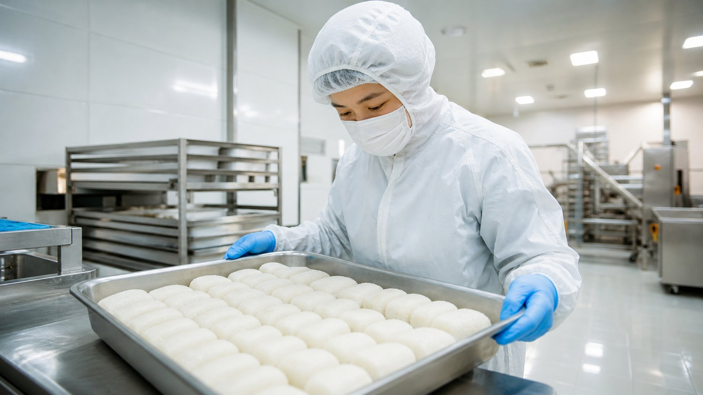
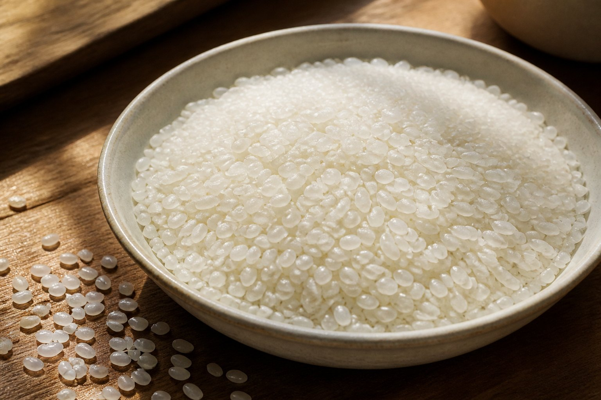
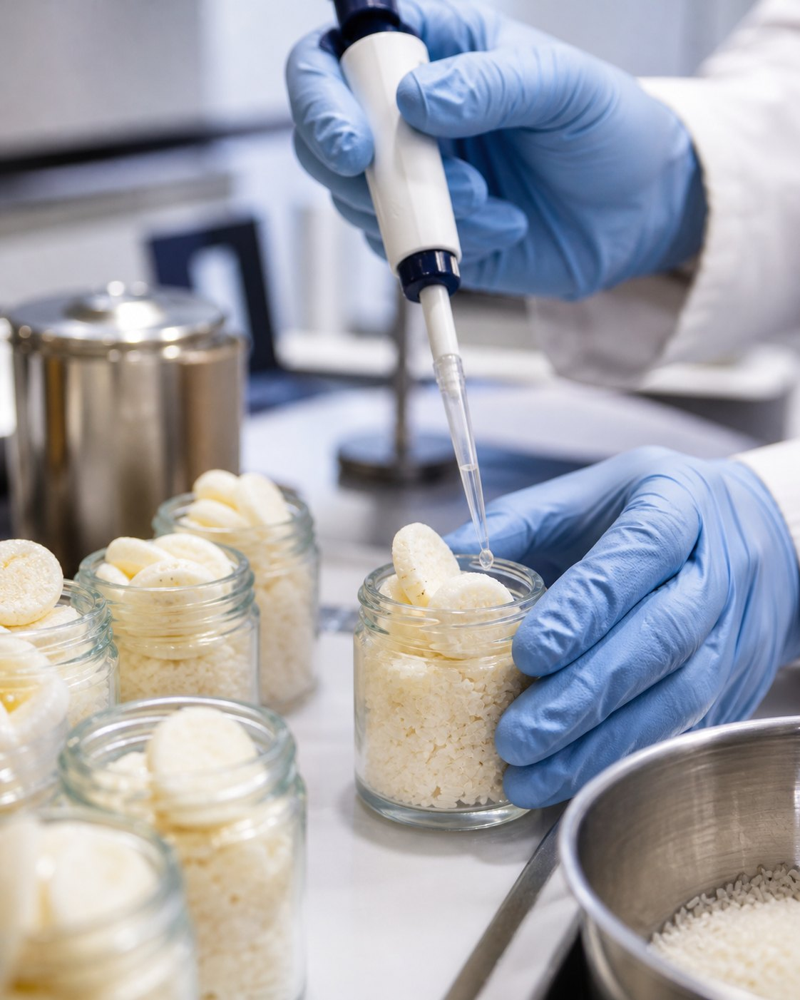

생산·품질
원료 입고부터 저온 출하까지 4단계. 담온식품의 생산동은 사람과 설비, 그리고 매일의 기록으로 관리됩니다.
네 단계로
지켜지는 기준
각 단계는 다음 단계의 조건이 됩니다. 한 단계라도 기록이 비면 출하하지 않습니다.
원료 입고
국산 쌀과 냉장 원료만 입고합니다. 검사 성적서와 입고 온도를 확인한 뒤 생산동으로 넘깁니다.
반죽·숙성
18시간 저온 숙성. 반죽 온도는 10분 단위로 기록하고, 기준을 벗어나면 숙성을 다시 시작합니다.
성형·살균
성형 후 증숙·살균을 거쳐 금속검출기(0.8mm)를 통과합니다. 통과 기록은 로트별로 보관합니다.
포장·출하
진공 포장 후 0–4℃ 콜드체인으로 출하합니다. 차량 적재 온도까지 확인합니다.

원재료 검수 기준
좋은 제품은 좋은 원료에서 시작합니다. 담온식품이 입고 단계에서 확인하는 항목입니다.
| 쌀 | 국산 · 수분 14–15% · 아밀로스 17–20% · 이물 0 |
|---|---|
| 밀가루 | 국산 · 단백질 11% 이상 · 잔류 농약 검사 확인 |
| 소스 원료 | 냉장 0–4℃ 입고 · 유통기한 70% 이내 |
| 포장재 | 식품용 PP/PE · 인쇄 잉크 안전성 확인 |

검사는
주기가 아니라 습관
2시간마다 자주검사, 매일 완제품 관능검사. 숫자로 확인할 수 없는 부분은 사람이 봅니다.
입고 검사
성적서 확인과 관능검사를 함께 합니다. 기준에 못 미치는 원료는 반송합니다.
공정 검사
2시간마다 중량·수분·온도를 측정합니다. 로트별 기록은 3년간 보관합니다.
완제품 검사
미생물 검사(주 1회)와 관능검사(매일). 출하 전 샘플을 보관합니다.
출하 관리
차량 적재 온도와 이력를 확인한 뒤 출고합니다. 이상 발생 시 즉시 회수 절차를 따릅니다.

자주검사 주기
로트별 기록 보관
공정 자주검사 주기
금속검출기 기준
보관 온도 기록 단위
수주 후 출고 기준
회사소식
공지·보도자료·신제품 소식을 전합니다. 납품 일정과 관련된 공지는 가장 먼저 올립니다.
공정 기록이
궁금하시다면.
방문 상담 시 생산동 견학과 공정 기록 열람을 안내드립니다.